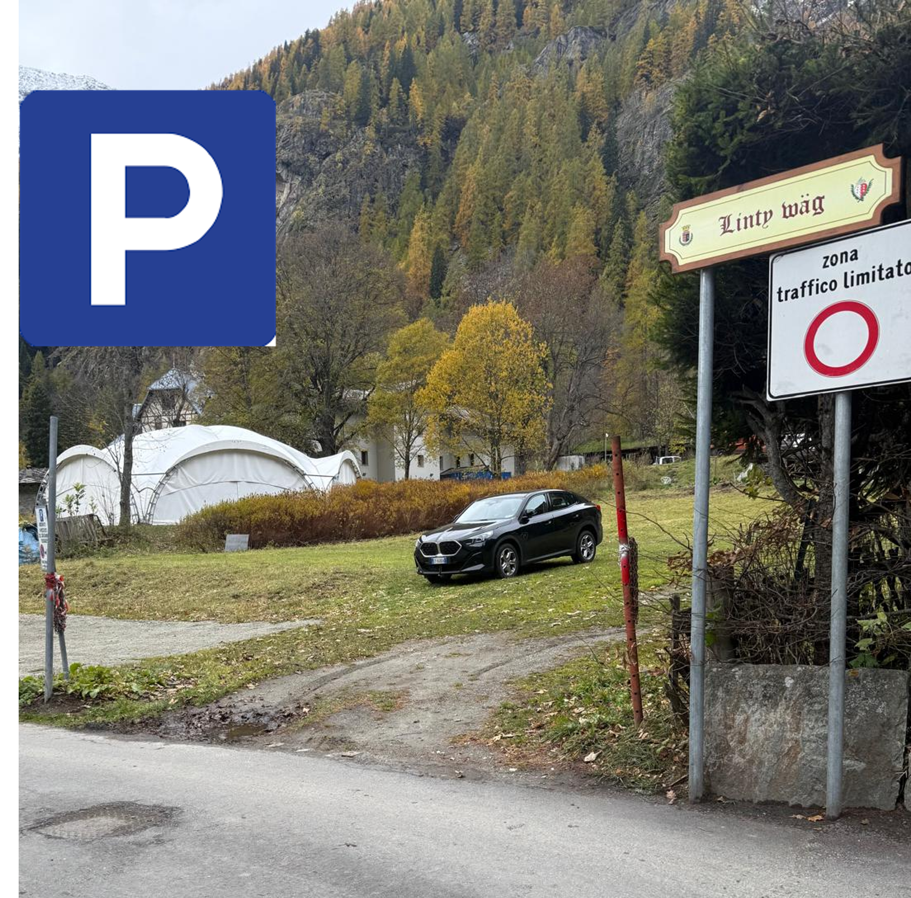

In questa sezione troverai il video di benvenuto e tutte le istruzioni dettagliate per utilizzare al meglio l’appartamento Nido nel Cuore Walser.
Consulta i manuali e guarda i video tutorial per utilizzare al meglio ogni dotazione dell’appartamento.
Il parcheggio gratuito si trova nella Linty Waeg a circa 100 metri dall’appartamento, in area sterrata prima della zona ZTL. Parcheggiare dove c'è la macchina nera. È facilmente raggiungibile a piedi in meno di due minuti.
👉 Apri la posizione su Google Maps

Il trasporto via bus nella valle di Gressoney è gestito dalla società V.I.T.A. S.p.A. La linea collega Pont Saint Martin a Stafal e il biglietto è acquistabile a bordo del mezzo.
Nella sezione “Linee-Orari” del loro sito, l’orario è contenuto nel file PDF “Pont-Saint-Martin – Gressoney-La-Trinité”, aggiornato frequentemente.
⚠️ Attenzione: se si cerca su Google “orari bus Gressoney”, il PDF proposto non sempre è aggiornato.
Scopri i percorsi escursionistici ufficiali e le mappe aggiornate dei sentieri alpini:
Informazioni su piste, impianti e condizioni di innevamento a Gressoney Saint Jean:
📍 Villa Deslex
11025 Gressoney-Saint-Jean (AO)
☎️ (+39) 0125 355185
📧 gressoney@turismo.vda.it